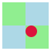
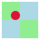
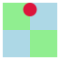
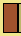
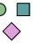

8.2 Pict
| (require toolbox/pict) | package: toolbox-draw-lib |
| (require toolbox/pict/base) | |
The toolbox/pict/base module exports all of the bindings documented in this section. The toolbox/pict module re-exports everything from pict, pict/conditional, ppict/tag, and toolbox/pict/base, except exports from later modules shadow exports from earlier ones with the same name.
8.2.1 Constructors
> (arrowhead 30)
procedure
(arrow-line [ #:arrow-size arrow-size #:line-length line-length #:line-width line-width]) → pict? arrow-size : (and/c rational? (not/c negative?)) = 10 line-length : (and/c rational? (not/c negative?)) = 50 line-width : (or/c (and/c rational? (not/c negative?)) #f) = 2
> (arrow-line)
8.2.2 Combiners
procedure
base : pict? dx : rational? dy : rational? pict : pict?
hole :
(or/c (vector/c rational? rational?) (vector/c pict-path? pict-finder/c) pict-finder/c) = #(0 0) (pin-over base path find pict [#:hole hole]) → pict? base : pict? path : pict-path? find : pict-finder/c pict : pict?
hole :
(or/c (vector/c rational? rational?) (vector/c pict-path? pict-finder/c) pict-finder/c) = #(0 0)
If hole is a vector of two rational numbers, the numbers are used as x- and y-coordinates for the pinhole’s location, relative to the top-left corner of pict.
If hole is a vector of a pict path and a finder procedure, the finder procedure is used to locate a child of pict, and the resulting coordinates are used as the pinhole.
If hole is a finder procedure, it is equivalent to supplying the finder procedure with an empty pict path.
> (define (bg-rect color) (filled-rectangle 30 30 #:draw-border? #f #:color color))
> (define bg (vc-append (hc-append (bg-rect "light green") (bg-rect "light blue")) (hc-append (bg-rect "light blue") (bg-rect "light green"))))
> (define fg (disk 15 #:color "crimson" #:draw-border? #f)) > (pin-over bg '() cc-find fg) 
> (pin-over bg '() cc-find fg #:hole rb-find) 
> (pin-over bg '() ct-find fg #:hole ct-find) 
procedure
base : pict? dx : rational? dy : rational? pict : pict?
hole :
(or/c (vector/c rational? rational?) (vector/c pict-path? pict-finder/c) pict-finder/c) = #(0 0) (pin-under base path find pict [#:hole hole]) → pict? base : pict? path : pict-path? find : pict-finder/c pict : pict?
hole :
(or/c (vector/c rational? rational?) (vector/c pict-path? pict-finder/c) pict-finder/c) = #(0 0)
procedure
(line-append pict ...+) → pict?
pict : pict?
The alignment rules used by line-append make it useful for aligning multiline blocks, especially code that uses expression-based indentation.
> (define (tt str) (text str 'modern 16))
> (line-append (vl-append (tt "(define some-example-with-a-long-first-line") (tt " (values ")) (vl-append (tt "(some-expression)") (tt "(another-expression)") (tt "note-the-close-paren!")) (tt ")"))
8.2.3 Drawing Adjusters
procedure
(set-smoothing pict smoothing) → pict?
pict : pict? smoothing : (or/c 'unsmoothed 'smoothed 'aligned)
procedure
pict : pict? color : (or/c color? 'pen #f) = (make-color 0 0 0) style : (or/c brush-style/c #f) = 'solid
As a special case, if color is 'pen, the brush’s color is set to the current pen color. This is intended to be used to follow the convention used by pict constructors like filled-rectangle, which (for some reason) default to using the current pen color rather than the current brush color if no color is provided.
> (define rect (dc (λ (dc x y) (send dc draw-rectangle x y 50 30)) 50 30)) > (set-brush rect #:color "red")
> (set-brush rect #:style 'fdiagonal-hatch)

procedure
(adjust-brush pict [ #:color color #:style style]) → pict? pict : pict? color : (or/c color? 'pen #f) = #f style : (or/c brush-style/c #f) = #f
procedure
(set-pen pict [ #:color color #:width width #:style style #:cap cap #:join join]) → pict? pict : pict? color : (or/c color? #f) = (make-color 0 0 0) width : (or/c (real-in 0 255) #f) = 0 style : (or/c pen-style/c #f) = 'solid cap : (or/c pen-cap-style/c #f) = 'round join : (or/c pen-join-style/c #f) = 'round
Note that many pict constructors, like filled-rectangle, conventionally default (for some reason) to using the current pen color for the fill rather than the current brush color if no color is provided. For that reason, using set-pen to change the pen color can also affect the fill color of picts created that way.
> (define rect (dc (λ (dc x y) (send dc draw-rectangle x y 50 30)) 50 30)) > (set-pen rect #:color "red" #:width 3) > (set-pen rect #:style 'short-dash #:width 3)
procedure
(adjust-pen pict [ #:color color #:width width #:style style #:cap cap #:join join]) → pict? pict : pict? color : (or/c color? #f) = #f width : (or/c (real-in 0 255) #f) = #f style : (or/c pen-style/c #f) = #f cap : (or/c pen-cap-style/c #f) = #f join : (or/c pen-join-style/c #f) = #f
8.2.4 Bounding Box Adjusters
procedure
pict : pict? path : pict-path?
> (define p1 (filled-rectangle 15 30 #:color "sienna"))
> (define p2 (hc-append p1 (filled-rectangle 15 30 #:color "darkkhaki"))) > (define p3 (filled-rectangle 50 50 #:color "khaki")) > (define combined (cc-superimpose p3 p2)) > combined > (refocus combined p2) > (refocus combined (list p2 p1)) 
procedure
pict : pict? paths : (non-empty-listof pict-path?)
> (define p1 (disk 15 #:color "dark sea green")) > (define p2 (filled-rectangle 15 15 #:color "cadet blue")) > (define p3 (rotate (filled-rectangle 15 15 #:color "plum") (/ pi 4))) > (define p4 (vc-append 7 (hc-append 12 p1 p2) p3)) > p4 > (refocus* p4 (list p1 p2)) > (refocus* p4 (list p1 p3)) > (refocus* p4 (list p2 p3)) 
procedure
pict : pict? x : rational? y : rational? (recenter pict path [find]) → pict? pict : pict? path : pict-path? find : pict-finder/c = cc-find
> (define p1 (filled-rectangle 15 15 #:color "slate blue")) > (define p2 (disk 15 #:color "firebrick")) > (define p3 (disk 15 #:color "forest green")) > (define p2+p3 (hc-append 5 p2 p3)) > (frame (vc-append 5 p1 p2+p3)) > (frame (vc-append 5 p1 (recenter p2+p3 p3)))
procedure
pict : pict? path : pict-path?
procedure
pict : pict? path : pict-path?
8.2.5 Paths and Finders
procedure
(pict-path? v) → boolean?
v : any/c
This definition is broader than the one used by pict-path? from pict (which is provided by this library as tagless-pict-path?), as it allows pict path elements to be symbols in addition to picts. When a symbol is an element of a pict path, it refers to all children tagged with that symbol via tag-pict. Additionally, an empty list may be used as a pict path, which always refers to the root pict.
procedure
(tagless-pict-path? v) → boolean?
v : any/c
The tagless-pict-path? function is actually the same binding as pict-path? from pict, re-exported under a different name.
procedure
(ppath-cons elem path) → pict-path?
elem : (or/c pict? symbol?) path : pict-path?
> (ppath-cons 'a '()) 'a
> (ppath-cons 'a 'b) '(a b)
> (ppath-cons 'a '(b c)) '(a b c)
procedure
(ppath-append path-a path-b) → pict-path?
path-a : pict-path? path-b : pict-path?
> (ppath-append 'a 'b) '(a b)
> (ppath-append '(a b) 'c) '(a b c)
> (ppath-append 'a '(b c)) '(a b c)
> (ppath-append '(a b) '(c d)) '(a b c d)
procedure
(find-child p path) → tagless-pict-path?
p : pict? path : pict-path?
procedure
(find-children p path) → (listof tagless-pict-path?)
p : pict? path : pict-path?
procedure
(offset-find find dx dy) → pict-finder/c
find : pict-finder/c dx : rational? dy : rational?
8.2.6 Conditional Picts
procedure
(pict-unless hide? p [#:launder? launder?]) → pict?
hide? : any/c p : pict? launder? : any/c = #f